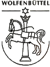

Wolfenbüettel - ulica Krzeszowska
 Również w Wolfenbüettel (miasto w środkowych Niemczech, w kraju związkowym Dolna Saksonia - miasto partnerskie Kamiennej Góry) znajdziemy ulicę Krzeszowską: Grüssauer Straße. Poniżej fragment planu miasta Wolfenbüettel: bezpośrednie sąsiedztwo ulic Liebauer Straße (ul. Lubawska) i Waldenburger Straße (ul. Wałbrzyska) pozwala chyba stwierdzić, że nazwa ulicy związana jest z dzisiejszym Krzeszowem Kamiennogórskim (niem. Grüssau).